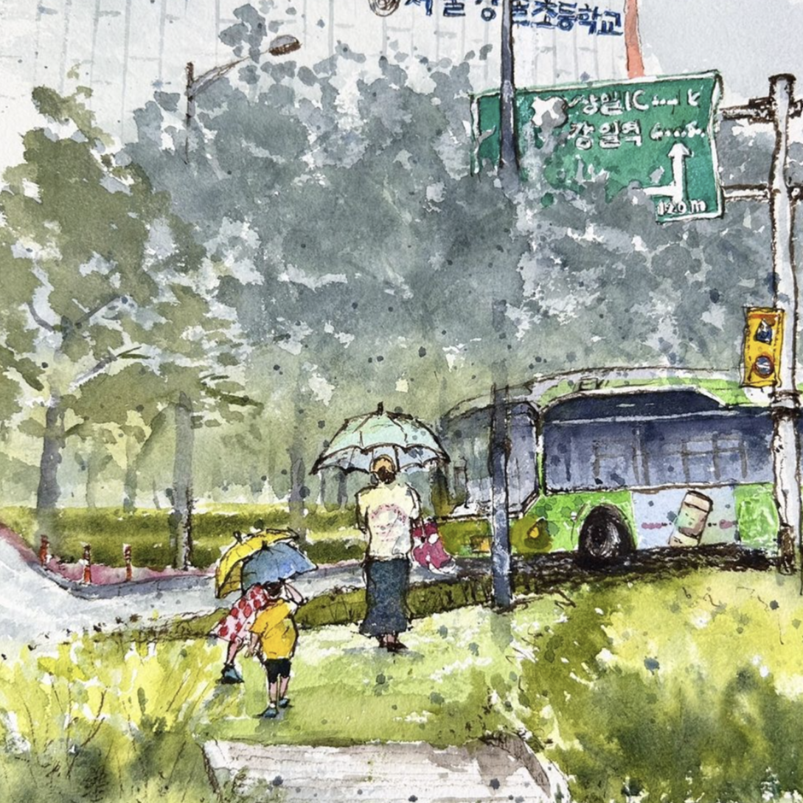
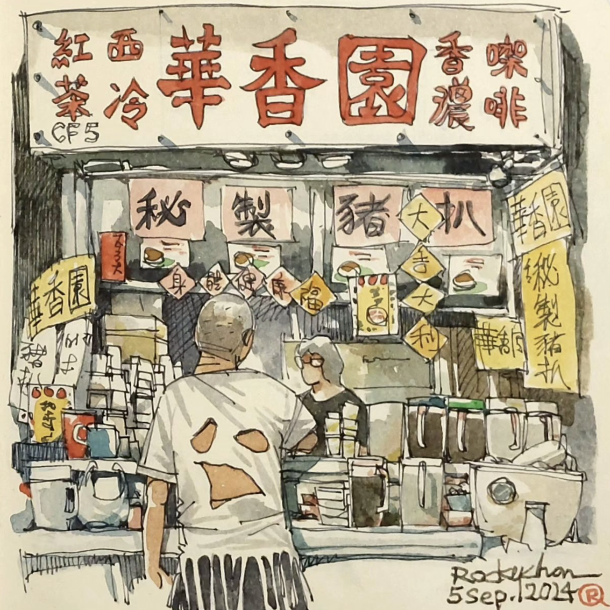

Sketching My Cat's Secret Life: The Adventures of Sir Whiskers!
Ever wonder what your pets do when you're not home? Join me as I explore the wild adventures of Sir Whiskers—sketches included!
205
 3,187
3,187
3,187
@Boochan: I swear my dog thinks he's a superhero when I'm gone!
@Kazama: My cat definitely throws parties when I'm out!
@Nene: Can we see your sketches? Sir Whiskers sounds epic!
@Masao: I think my hamster is plotting world domination!
@Himawari: I love this! Sketching pet adventures sounds like a blast!
view more
Epic Failures: My Worst Art Mishaps and How I Survived!
Let's spill the beans on our biggest art fails! From ink spills to disastrous proportions, we've all been there!
231
5,237
5,237
: I once drew a cat that looked more like a potato!
: My first painting ended up looking like a crime scene!
: I accidentally painted my hand instead of the canvas!
: Let's start an art fail support group!
: Your fails inspire me to keep trying—art is hard!
view more
The Art of Procrastination: How to Avoid Drawing (But Still Look Busy)!
Let's talk about the creative ways we dodge our art responsibilities. Bonus points if it involves snacks!
4,238
10,273
10,273
: I've perfected the 'staring at the canvas' technique!
: I call it 'research' when I binge-watch art tutorials!
: Snacks are the ultimate inspiration, right?
: I accidentally ended up cleaning instead of sketching!
: Can we have a procrastination challenge? I'm in!
view more

Aliens or Art? My Attempts to Sketch Extraterrestrial Beings!
Ever tried sketching aliens? Mine look like rejected cartoon characters! Share your best (or worst) alien designs!
421
3,129
3,129
: My aliens just end up being colorful blobs!
: I drew one with six eyes and it looked fabulous!
: Can aliens have mustaches? Asking for a friend!
: I want to see your blobs—they sound amazing!
: This is the best thread ever! Let's get weird!
view more